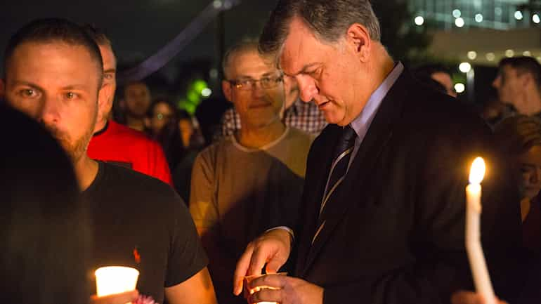
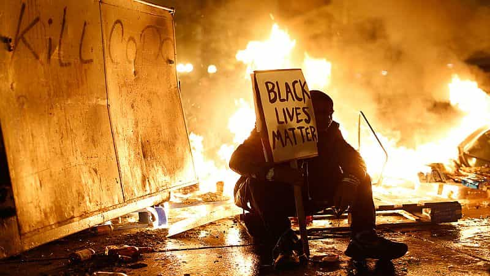

< < < Back
Dallas’s SJW Mayor Blames Slavery For The Deaths Of Five Policemen – Return Of Kings
This is on my generation of leaders. It is on our watch that we have allowed this to continue to fester, that we have led the next generation down a vicious path of rhetoric and actions that pit one against the other…
— Dallas Mayor Mike Rawlings
At a time when he was meant to be unashamedly defending law and order in his city, the Democratic Mayor of Dallas, Mike Rawlings, has referred to slavery during a vigil for five police officers slain by a black sniper, Micah Xavier Johnson. Instead of honoring the service and ultimate sacrifice of the dead and wounded lawmen, Rawlings has started the unsurprising process of legitimizing the grievances and actions of the black supremacist killer, who explicitly said he wanted to kill white people. No amount of his calling for everyone to appreciate the perspectives of both Black Lives Matter protestors and their critics can hide the excuse he is giving to future attackers.
Sadly, Mike Rawlings’ disgusting justification of the killings, however implicit he tried to make it, shows how beholden many politicians have become to extremist, logic-blind groups like Black Lives Matter. Any hope of Democratic politicians resisting SJW rhetoric, such as former Maryland Governor Martin O’Malley’s apologized-for “all lives matter” comment, is fast fading. As we all know, the mainstream Republican leadership has already been infected by a quasi-deference to SJW beliefs, particularly when SJWs use violence against Trump supporters and GOP luminaries largely ignore it. Consequently, the bulk of each major party is continuing to create an atmosphere that enables depraved leftwing violence.
Plus, Rawlings is clearly savaging middle-aged white men when he refers to “my generation of leaders.” At a time when he is supposedly calling for an end to race-baiting and racial tensions, he is doing his best to make sure that an entire group of people, determined by gender and race, is made to apologize again for some made-up political crime. Meanwhile, the seriously criminal underbelly of Black Lives Matter has escaped any rebuke by Rawlings. So, too, has the recent condoning and even incitement of violence produced by zealous SJW “journalists” like Jesse Benn.
Do Democratic mayors have control of their cities?

Rawlings is only spitting on the service and sacrifice of the five dead officers, not honoring them.
The answer is clearly no. Otherwise they would not need to pander to violence-inclined groups like Black Lives Matter, only hours after five of their law enforcement personnel have been murdered. Although I called Rawlings a SJW earlier, a significant reason for his slavery remarks may just be his fears for his own tenure and the safety of his city. Any major city mayor who comes out against Black Lives Matter probably knows that their criticism will result in violent protests and wanton attacks on bystanders and the community at large. And then there’s that very personal element of probably losing your political career. All in all, metropolitan Democratic politicians are being held hostage to an even greater extent than their state and federal colleagues.
From Miami to Los Angeles, Dallas to Chicago, major American cities have become safe spaces only for the most fringe and mentally ill leftwing groups. A fake poop swastika on campus leads to a Hurricane Katrina-like excoriation of American masculinity and so-called white privilege, merely to assuage the feelings of SJWs and leftwing race-baiters. But the snuffing out of the lives of five cops doing their jobs, not to mention the pain of a number of others also hit by bullets, warrants only an attack on White America.
Expect only worse things to come

Domestic terrorists, plain and simple.
Twitter has been awash in recent days with SJW reminders about Philando Castile and Alton Sterling, the two black men whose deaths Dallas killer Micah Xavier Johnson said motivated his anti-white rampage. By focusing on Castile and Sterling, men with gang connections and very dubious backgrounds, the leftwing Twitterati is making a very loud statement that unrelated deaths in Minnesota and Louisiana somehow justify the deaths of police many hundreds of miles away in Dallas. Or, only moderately less cruelly, that white police lives matter a whole lot less than black lives, including black lives associated with gangs.
If the Dallas police deaths produce less than a murmur from mainstream politicians about the criminal nature of both Black Lives Matter protests and rhetoric, then America is in for a very scary and dangerous racial ride. If you do not feel unsafe now, the time for severely doubting your personal security is maybe just around the corner.
 If you like this article and are concerned about the future of the Western world, check out Roosh's book Free Speech Isn't Free. It gives an inside look to how the globalist establishment is attempting to marginalize masculine men with a leftist agenda that promotes censorship, feminism, and sterility. It also shares key knowledge and tools that you can use to defend yourself against social justice attacks. Click here to learn more about the book. Your support will help maintain our operation.
If you like this article and are concerned about the future of the Western world, check out Roosh's book Free Speech Isn't Free. It gives an inside look to how the globalist establishment is attempting to marginalize masculine men with a leftist agenda that promotes censorship, feminism, and sterility. It also shares key knowledge and tools that you can use to defend yourself against social justice attacks. Click here to learn more about the book. Your support will help maintain our operation.
Read More: Is Civilization Just Another Name For Slavery?